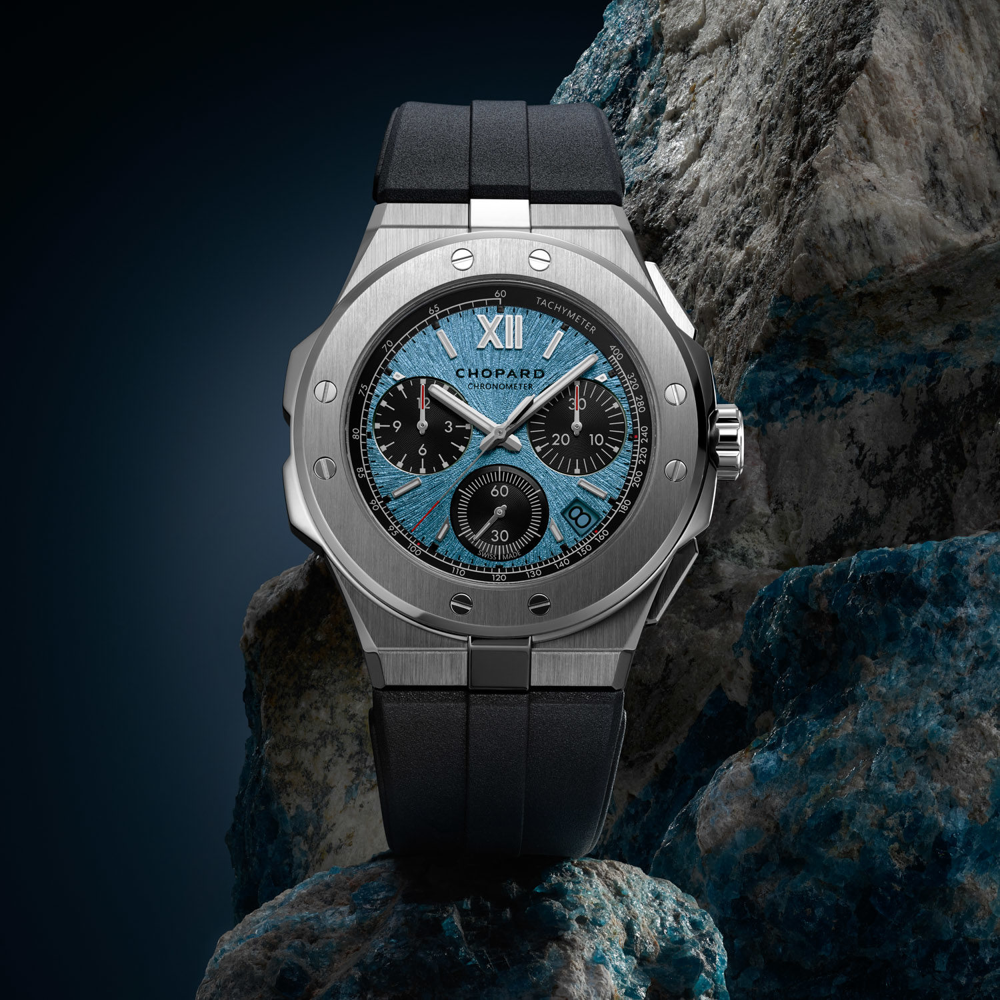
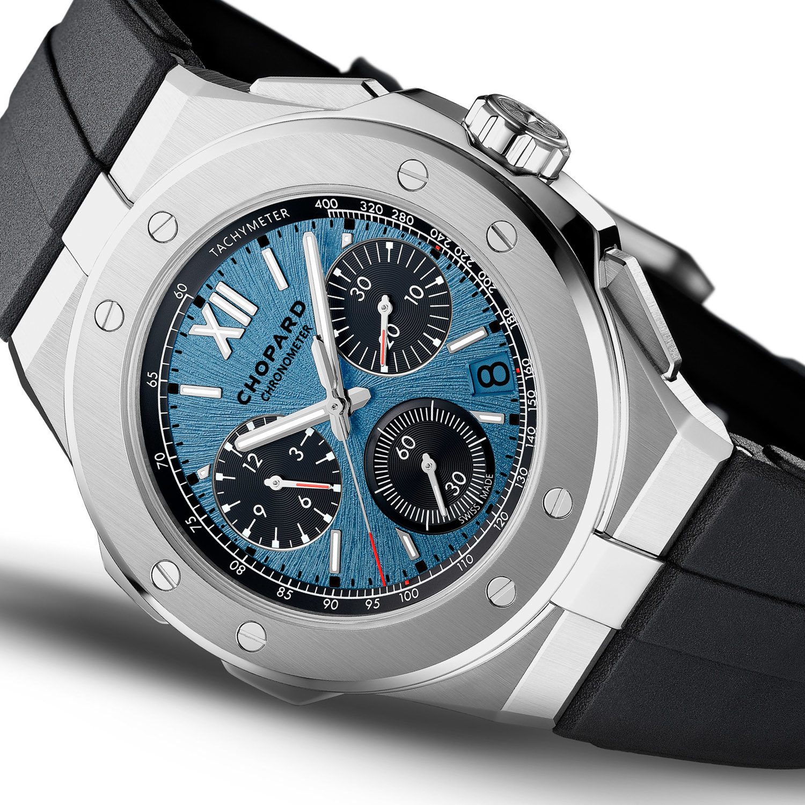
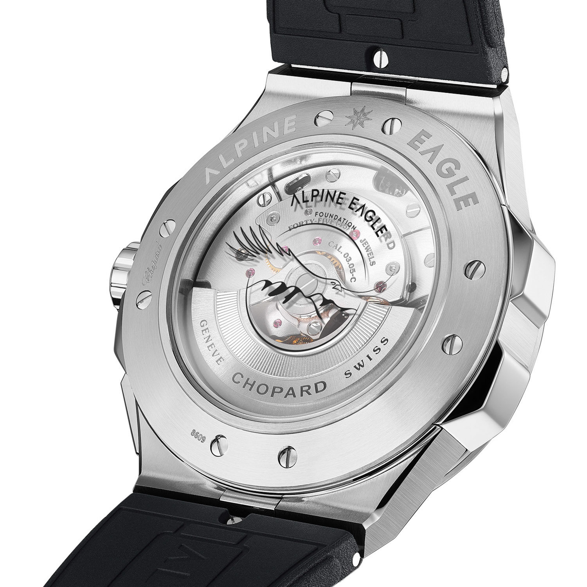

<!DOCTYPE html>
<html>
<head>
 
    <meta charset="UTF-8">
    <meta name="viewport" content="width=device-width, initial-scale=1.0">
    <title>TITAN</title>
    <link rel="stylesheet" href="articlleStyle.css">
   
    <link rel="stylesheet" href="bootsrap.min.css">
    <script defer src ="bootstrap.bundle.min.js"></script>
    <script src="javascriptzone.js"></script>
  


</body>
</html>
    
</head>
<body>
    
    <div class="article-container">
    <h1>Chopard Launches Alpine Eagle XL<br>
         Chrono in Titanium</h1>
      
    <p class="article-texte"> Just released by Chopard for Watches & Wonders 2024 is a new titanium version of<br>
         the Alpine Eagle XL Chrono. Done in grade 5 titanium, this new model joins the<br>
          current lineup of XL Chrono watches in Lucent steel as well as a rose gold and<br>
           ceramized titanium version.</p>
    
    <p class="article-texte">
      The Chrono model of the Alpine Eagle doesn’t quite get the same attention as some of <br>
    the other versions which is likely due to the larger case size not to mention the higher<br>
  price point. That said, for those who prefer something a little bigger andare fans of the<br>
        “luxury chronograph on a strap” vibe made famous by ubiquitous watches like the Royal Oak<br>
         Offshore and the Hublot Big Bang. Done in a 44mm wideand 13.15mm thick case (100 m of water<br>
          resistance), this new XL Chrono is should be very lightweight due to pairing the case material<br>
           with a rubber strap</p>
     
    
    <p class="article-texte">
     The striking dials of the Alpine Eagle have become a  signature of <br>
      the collection and a deserved point of pride for Chopard. This model<br>
       debuts a new color which is dubbed “Rhône Blue” that is inspired by <br>
        the famed river located in the Alps.  It is an icy glacial blue in <br>
         contrast to the existing “Aletsch blue” which is deep and   saturated —<br>
          almost navy blue. The Rhône blue is complemented with a  matching date <br>
           window and has contrasting black  sub-dials making for a sporty and legible<br>
            dial. From the case back one can see the Chopard 03.05-C automatic movement<br>
              with integrated column-wheel  flyback  chronograph which operates at 4 Hz and<br>
               has  a 60-hour power reserve.</p>
    
      <p class="article-texte">
          More and more consumers are understanding just how superior titanium can be<br>
           in comparison to steel and it’s just good business to offer a watch as substantial<br>
            as the XL Chrono in the lightweight metal. Interestingly enough, there is no hard <br>
            and fast rule when it comes to the price differential between titanium and steel.<br>
             Some brands charge essentially the same or a small premium for titanium while others<br>
              price titanium at a substantial premium. A boutique exclusive, the Chopard Alpine<br>
               Eagle XL Chrono in titanium (Ref. 298609-3008) is priced at $25,000 which is about <br>
               $4,900 more than the Lucent steel model. Chopard notes that part of the proceeds from<br>
                this Rhône blue model will go to the Alpine Eagle Foundation which Co-President<br>
                 Karl-Friedrich Scheufele helped to establish with the aim of raising awareness of <br>
                 the Alpine region and its wildlife.

</div>
</body>
</html>